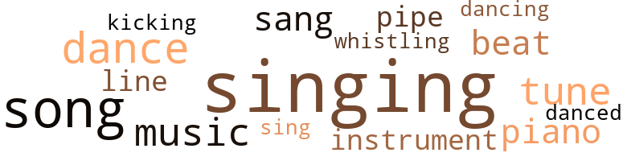
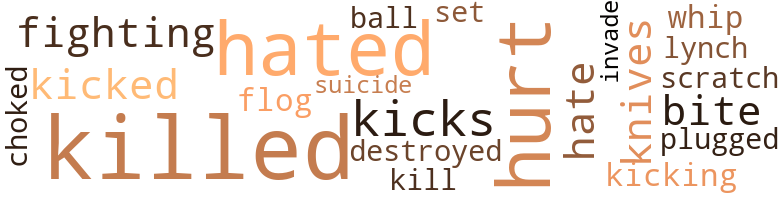
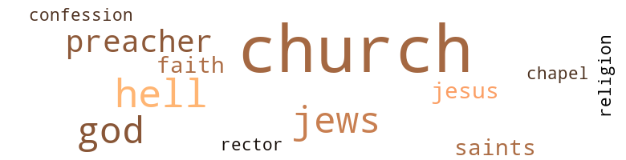

Boar Hog Woman (The), by Overstreet, Cleo (1972)
58 music-related terms matched in this text.
Most frequent terms in this topic: singing (10); Singing (7); song (6); dance (5); music (4)
dance.n.01
Definition: an artistic form of nonverbal communication
| word | sentence |
|---|---|
| dance | The Prancy Filly played the fellows loud , and she did her dance any time she felt like it . |
| dance | Hike 's mother came out doing the Holy Roller dance . |
| dance | Then all of the Holy Rollers joined Hike 's mother in the dance . |
| dance | This was the first fall dance . |
| dance | Finally he put me out in front of the building where the dance was . |
dance.v.03
Definition: skip, leap, or move up and down or sideways
| word | sentence |
|---|---|
| dancing | It was impossible for us to find a sent or a table , so we started dancing and danced from where Hars and his party were standing . |
| danced | It was impossible for us to find a sent or a table , so we started dancing and danced from where Hars and his party were standing . |
kick.v.04
Definition: kick a leg up
| word | sentence |
|---|---|
| kicking | The black man got tired of the white man kicking his ass . |
music.n.01
Definition: an artistic form of auditory communication incorporating instrumental or vocal tones in a structured and continuous manner
| word | sentence |
|---|---|
| music | But he went out walking one evening and passed a nightclub and heard all of the loud music and that put him in the groove again . |
| music | The music would be so loud in Ben 's house on the weekends the roof would be rising up and down as if it was playing a tune . |
| music | The ol' Filly went horsing through the house , dancing with the music . |
| music | Ben was playing his music and drinking his whiskey . |
musical_instrument.n.01
Definition: any of various devices or contrivances that can be used to produce musical tones or sounds
| word | sentence |
|---|---|
| instruments | Matt looked for some of his instruments to see if he had a different kind of telescope that would work better in sand and rocks . |
| instrument | When the men came back he said to Hars , " I thought of another instrument we could use ; it is a microscope . |
piano.n.01
Definition: a keyboard instrument that is played by depressing keys that cause hammers to strike tuned strings and produce sounds
| word | sentence |
|---|---|
| piano | Lucy Jones was play - ing the piano . |
| piano | Lucy Jones was busy on the piano playing " Nothing Between My Soul and My Savior , " but Reverend Skillit was preaching and singing " God Be With Us Until We Meet . " |
| piano | So she started beating on the piano " Down At The Cross . " |
pipe.n.04
Definition: a tubular wind instrument
| word | sentence |
|---|---|
| pipe | He stopped lighting his pipe and said , " Unless somebody told a damn lie and there is no such place as the Silent City . " |
| pipe | Abe was sucking on his pipe and it was n't lit . |
rhythm.n.01
Definition: the basic rhythmic unit in a piece of music
| word | sentence |
|---|---|
| beat | I covered my beat every Friday night and Saturday night . |
| beat | So the next weekend she went with me on my beat . |
| beat | I hod been on my beat so many times , I was getting tired . |
sing.v.02
Definition: produce tones with the voice
| word | sentence |
|---|---|
| singing | That was n't bad enough , Reverend Skillit started singing as if he were singing with the tolling of the bell . |
| sang | Reverend Skillit sang " When The Saints Go Marching In . " |
| singing | Lucy Jones was busy on the piano playing " Nothing Between My Soul and My Savior , " but Reverend Skillit was preaching and singing " God Be With Us Until We Meet . " |
| sang | So he sang another song that he thought was appropriate for the occasion , " Lord I 'm Com - ing Home . " |
| sang | Clair had been to the concert or something where Johnny sang , and it sounded to be perfect normal for a girl Clair 's age to be very excited about a young singer . |
| sing | So she decided she would go to the church and sing in the choir . |
| singing | The church house was filled to capacity , and this big black woman sitting on the back seat of the choir started singing a song , " There Ai n't No Way . " |
| singing | She was singing this strong and loud with tears and sweat rolling down her cheeks . |
| singing | " The only way to know who is white on the records is to know who is singing them . " |
singing.n.01
Definition: the act of singing vocal music
| word | sentence |
|---|---|
| singing | That was n't bad enough , Reverend Skillit started singing as if he were singing with the tolling of the bell . |
| singing | All of this confused Lucy Jones ; she did n't want the song they were singing . |
| Singing | Ben turned out to be quite two-faced ; he ran and picked up the Singing Cricket as if he was so glad to see the little Cricket and was trying to make fun of them all at the same time . |
| singing | Who wanted the ol' Boar Hog Woman with that funny looking baby who sounded just like a singing cricket ? |
| Singing | Nancy was an old fool , she was the Boar Hog Woman 's nurse and cook when the Singing Cricket came . |
| singing | The baby jumped out of her dancing and singing " I Feel Good . " |
| singing | I knew why the baby was called the Singing Cricket , because it came here singing . |
| Singing | When the Singing Cricket came , he turned them on , and this was more than the wives could handle . |
| Singing | He stayed with the ol' Boar Hog , and when the Singing Cricket came , he was very good to her and was quite the baby-sitter . |
| Singing | But when the Singing Cricket was seen on TV , all of his friends stopped laughing and wanted to be his good friends again . |
| Singing | Like when the Singing Cricket was born , Jimmie was the first one to tell me . |
| Singing | Hars had kicked the Boar Hog 's ass about the Singing Crick - et 's shitty diapers . |
song.n.01
Definition: a short musical composition with words
| word | sentence |
|---|---|
| song | So he sang another song that he thought was appropriate for the occasion , " Lord I 'm Com - ing Home . " |
| song | That was the wrong song . |
| song | All of this confused Lucy Jones ; she did n't want the song they were singing . |
| song | Lucis Green started his song , " Were You There When The Roll Was Called Up Yonder . " |
| songs | Reverend Skillit still preaching , and there are three songs on the floor . |
| songs | Reverend Skillit had got warm now : there are three songs on the floor , and he is now looking over in the casket . |
| song | Reverend Skillit was so busy trying to get to his next song he did n't even hear what Katie said , and Katie was getting ready to sock him . |
| song | The church house was filled to capacity , and this big black woman sitting on the back seat of the choir started singing a song , " There Ai n't No Way . " |
tune.n.01
Definition: a succession of notes forming a distinctive sequence
| word | sentence |
|---|---|
| tune | He began to turn the small wheel of fortune , humming the tune of " Oh , wheel of fortune , why did you let me down ? |
| tune | She beat out the tune like she was at a dance hall . |
| line | This little runt was all Amos line ! |
| line | That same old woman who was doing all of that moaning and groan - ing , if old man Block or any other white man had walk in on us and caught me on top of her with all of my clothes off and she had all of her clothes off , and she laying there half drunk trying her best to show me how to screw her , she would have sober up in seconds and hollered raped , and they would have killed me and she would have stood in line watching it . " |
| tune | The music would be so loud in Ben 's house on the weekends the roof would be rising up and down as if it was playing a tune . |
| tune | It seemed to me there were more important things to he done than going to those white folks ' places which our forefathers had paid for in the first place , beside the black people paying again at the tune of eighteen hundred dollars per night . |
whistle.v.01
Definition: make whistling sounds
| word | sentence |
|---|---|
| whistling | He got up and walked out of the house and down the street whistling and thinking to himself that it is too bad that people will destroy themselves and other people for nothing . |
57 violence-related terms matched in this text.
Most frequent terms in this topic: killed (13); hated (9); hurt (9); kicks (3); bite (2)
abrasion.n.01
Definition: an abraded area where the skin is torn or worn off
| word | sentence |
|---|---|
| scratch | He was busy scratch - ing between his legs and feeling for nothing . |
destroy.v.04
Definition: put (an animal) to death
| word | sentence |
|---|---|
| destroyed | The system had already destroyed him . |
fight.v.02
Definition: fight against or resist strongly
| word | sentence |
|---|---|
| fighting | It was a nigger bar , and they were white soldiers and they were fighting for our country . |
| fighting | The funeral director had a very hard time trying to keep the mother and the wife from fighting at the funeral . |
flog.v.01
Definition: beat severely with a whip or rod
| word | sentence |
|---|---|
| flog | This is also how the Boar flog Woman moved in on me . |
gag.v.06
Definition: cause to retch or choke
| word | sentence |
|---|---|
| choked | Hars hated to tell Jimmie he did n't know , but he choked and said , " I do n't know where my family is . " |
hate.v.01
Definition: dislike intensely; feel antipathy or aversion towards
| word | sentence |
|---|---|
| hated | Katie was a bitch , but she hated for Mike to tell Junior to meet him and not show up . |
| hated | She decided she would give some of them to Alex , and she knew that Hike had hated the ground that Alex walked on . |
| hate | Ben poured him another drink and said to Hars , " Man , you maybe have never lived in the rural where the white folks hate your guts , and you have to do everything for them , even screw them in the dark where nobody knows it hut you , and you dare not to even dream about it . |
| hate | " Man , you are talking crazy , I hate to see any war break out because there are so many lives lost . " |
| hated | Clair called him that old big-headed man , and she hated him . |
| hated | He hated to go back home . |
| hated | Hars really hated to use Ben 's good nature . |
| hated | Hars hated to tell Jimmie he did n't know , but he choked and said , " I do n't know where my family is . " |
| hated | He hated me so bad that by the way he answered me my voice sounded like the Klan 's . |
| hated | He loved his friends and hated to think that his good friends would treat him like that . |
| hated | He hated to come back and tell me about how he had missed out on Bennie 's wife and stepdaughter . |
hurt.v.04
Definition: cause damage or affect negatively
| word | sentence |
|---|---|
| hurt | I have eaten the wrong things , and drunk the wrong stuff , and lived in the wrong places and none of it has hurt me . |
| hurt | " Well , Ben , did that hurt your feelings ? |
injury.n.01
Definition: any physical damage to the body caused by violence or accident or fracture etc.
| word | sentence |
|---|---|
| hurt | This hurt Hike Junior , for his father to tell him to meet him at the barber shop and not to show up . |
| hurt | The old folks ' children sure hnve the hurt on them . |
invade.v.01
Definition: march aggressively into another's territory by military force for the purposes of conquest and occupation
| word | sentence |
|---|---|
| invade | They decided they would invade his franchise . |
kick.v.04
Definition: kick a leg up
| word | sentence |
|---|---|
| kicking | The black man got tired of the white man kicking his ass . |
kick_back.v.02
Definition: spring back, as from a forceful thrust
| word | sentence |
|---|---|
| kicks | I did n't have any idea that any man would go with a woman like that , not even for kicks . |
| kicked | Then they kicked his ass until his nose bled . |
| kicked | Hars had kicked the Boar Hog 's ass about the Singing Crick - et 's shitty diapers . |
| kicks | And Annie really got her kicks from the black girls when she was in school in Mississippi . |
| kicks | Hike Junior and Dennis were running all over the woods , and she was getting her kicks talking about Hike ; she was so glad that he had taken time out to come spend the eve - ning with her and the children . |
kill.v.10
Definition: cause the death of, without intention
| word | sentence |
|---|---|
| killed | Heavy Brain had kindly worked Mr. Clyde over , and he was looking more like a piece of raw beef like his daddy killed down there in Alabama . |
| killed | They were mad because they thought that the Prancy Filly had mar - ried Hike for his money and she had killed him . |
| killed | Hike 's mother just kept on yelling out loud , " That ol' Mare is the one who killed my son . " |
| killed | She killed my son for his money . |
| kill | Katie was so evil she thought that the Prancy Mare had given the nurse something to kill her child . |
| killed | He threw the runt down and almost killed it . |
| killed | Those few words almost killed Amos . |
| killed | That same old woman who was doing all of that moaning and groan - ing , if old man Block or any other white man had walk in on us and caught me on top of her with all of my clothes off and she had all of her clothes off , and she laying there half drunk trying her best to show me how to screw her , she would have sober up in seconds and hollered raped , and they would have killed me and she would have stood in line watching it . " |
| killed | But they are happy when they get them a white woman , and they have forgotten how many of their brothers and sisters have been killed about that same shit . |
| killed | But one thing for sure , before they will show them getting married they rather show them being killed . " |
| killed | They socked it to him with that ol' funky woman who did n't even look like a woman ; that bitch even moved like a damn hog , her ass looked like a hog 's behind that was already fattened to be killed . |
| killed | But that bitch like to have got me killed on a big juicy humble . |
| killed | Because we have been waiting too long for justice to he going down to the white folks ' big hotel for a formal , and it was just last week when we were marching and being killed and heat just to eat or have a cup of coffee in one of those places . |
| killed | That bitch and that son-of-a-bitch , they almost got me killed . |
knife.n.02
Definition: a weapon with a handle and blade with a sharp point
| word | sentence |
|---|---|
| knives | All they did on Saturday night was to go from one nigger 's house to the other and have Saturday night fish fry , cut each other with case knives and butcher knives , and then turn around the next weekend and have the funeral . |
| knives | All they did on Saturday night was to go from one nigger 's house to the other and have Saturday night fish fry , cut each other with case knives and butcher knives , and then turn around the next weekend and have the funeral . |
lynch.v.01
Definition: kill without legal sanction
| word | sentence |
|---|---|
| lynch | " Nigger , we will lynch you right here in this bar . " |
musket_ball.n.01
Definition: a solid projectile that is shot by a musket
| word | sentence |
|---|---|
| ball | While Katie was sitting there looking at Hike 's fine clothes , she thought about the night that we went to the barber shop ball . |
pain.v.02
Definition: cause emotional anguish or make miserable
| word | sentence |
|---|---|
| hurt | So she jumped up shouting and hollering and screaming as if she was hurt . |
| hurt | Hike Junior was pretty upset with his mother ; he was hurt but he would n't let her know it . |
| hurt | He did n't want the children to be afraid of him , so he said , " Kids , I am not going to hurt you . " |
| hurt | I was happy to do some - thing that would hurt him . |
| hurt | After I had found something that really hurt him , I was just like the old mother turtle ; I was ready to crawl back into my shell . |
punch.v.01
Definition: deliver a quick blow to
| word | sentence |
|---|---|
| plugged | " No , " Hars answered him slowly , " the percolator was still plugged in . " |
sic.v.01
Definition: urge to attack someone
| word | sentence |
|---|---|
| set | Matt still had his mind and heart set on going back into those old wooden houses . |
sting.n.03
Definition: a painful wound caused by the thrust of an insect's stinger into skin
| word | sentence |
|---|---|
| bite | He decided he would go and get him a bite to eat while they were shouting and crying . |
| bite | I must have made a dozen calls to different places where Jimmie might stop to get him a bite to eat . |
suicide.n.01
Definition: the act of killing yourself
| word | sentence |
|---|---|
| suicide | This was a slow way of committing suicide by working oil of the week and sitting up all of the weekends and drinking rotgut whiskey . |
whip.v.03
Definition: thrash about flexibly in the manner of a whiplash
| word | sentence |
|---|---|
| whip | I have never before in my life heard of anybody getting a whipping so bad that they whip their stockings off . |
65 religion-related terms matched in this text.
Most frequent terms in this topic: church (32); hell (7); Jews (6); God (6); preacher (3)
chapel.n.01
Definition: a place of worship that has its own altar
| word | sentence |
|---|---|
| chapel | The funeral director was trying to get the Prancy Filly out of the chapel , to keep her from hitting Hike 's mother . |
church.n.02
Definition: a place for public (especially Christian) worship
| word | sentence |
|---|---|
| church | Hars made it to the church just in time . |
| church | Katie Bine and her children were the last to come in the church . |
| church | Hell started before they got to the church . |
| church | When the hearse came to the church , the Prancy Filly was riding in the big black lim - ousine all by herself . |
| church | The family started crying before they got inside of the church . |
| church | There were so many flowers in the church the funeral di - rector had to move part of them so there would be room for the casket . |
| church | The Prancy Filly was going out of the church , talking about how she 'd taken care of the son-of-a-bitch , and his damn mammy did n't even come to see him . |
| church | Katie , sitting in the back of the church watching Hike Junior , Clair , and Paul , was giving Beky signs and telling her what to do . |
| church | Somebody in the church said that the woman was chunk . |
| church | Reverend Skillit started preaching , hollering , " Lord , Brother Blue , I know the day when he came to church . |
| church | As he started out the door of the church who was there but the hotel manager : " I would like a word with you , Mr. Heavy . " |
| church | " There is no need for you to come down here trying to start no mess be - cause there is enough going on in the church now . " |
| church | Heavy knew that he had got to go back inside the church . |
| church | The undertakers knew somehow they were going to have to get those people out of that church and get the body to the cemetery . |
| church | Everybody in the church thought he had a heart attack . |
| church | Katie sat in the back of the church and counted all fifty-nine of the bleeding hearts . |
| church | This really upset Katie , sitting there in the church listening to that old ignorant preacher . |
| church | Hike Junior felt like he was the one who was the cause of her falling out at the church . |
| church | I could n't even go to Sunday School because she wanted me to drive her to their church . |
| church | She would go to church every Sunday , and after I was large enough to drive her I would stay in the car while she went into the church . |
| church | She would go to church every Sunday , and after I was large enough to drive her I would stay in the car while she went into the church . |
| church | Old man Block never went to church , he always looked over his crops on Sunday and go somewhere - I never did find out where he was going . |
| church | So she decided she would go to the church and sing in the choir . |
| church | The church house was filled to capacity , and this big black woman sitting on the back seat of the choir started singing a song , " There Ai n't No Way . " |
| church | She had run her race and she knew her last chance was to go and work in the church . |
| church | Katie was getting ready for the big church wedding , so she had no time for no nigger mess . |
| church | Katie had the church all dressed up with differ - ent kinds of flowers . |
church.n.04
Definition: the body of people who attend or belong to a particular local church
| word | sentence |
|---|---|
| church | So he told himself that the funeral was n't going to last long ; he knew that Hike was no church man . |
| church | All the mothers of the church were around her , fanning her , and it was raining so hard it was cold . |
| church | She got mad be - cause all the mothers of the church were fanning the ol' Mare . |
| church | The church looked like a hospital ( emergency room at that ) . |
| church | One thing that Katie thought of on her way back home about the good ol' Reverend was that he did n't tell the people in the church about Hike running around with all of the whores . |
confession.n.05
Definition: the document that spells out the belief system of a given church (especially the Reformation churches of the 16th century)
| word | sentence |
|---|---|
| confession | Reverend Skillit even mentioned Nat Turner 's confession , as if Hike was some kind of hero . |
curate.n.01
Definition: a person authorized to conduct religious worship
| word | sentence |
|---|---|
| rector | There were so many flowers in the church the funeral di - rector had to move part of them so there would be room for the casket . |
god.n.03
Definition: a man of such superior qualities that he seems like a deity to other people
| word | sentence |
|---|---|
| God | Then he went to preaching and telling God about please put his hands on Hike 's ex-wife and the children . |
| God | Talking about God as if he had some real dealing with God . |
| God | Talking about God as if he had some real dealing with God . |
| God | Then I thought about how long the black people had been sitting around crying and praying to God to help them with all the shit that the white folks had been putting on them for years . |
| God | Then I was crazy enough to think that God was go - ing to stop what he was doing and help me with all that shit that Hars had put on me . |
| God | And I thought if God was going to do anything it sure would have been nice if he had helped the poor colored folks out . |
hell.n.01
Definition: any place of pain and turmoil
| word | sentence |
|---|---|
| hell | Katie said , " What in the hell has Hike got to do with Nat Turner ? |
| hell | Hars still wanted to know what in the hell was Ben thinking about . |
| hell | Ben has been away from old lady Block for twenty years and what the hell was he do - ing thinking about her now ? |
| hell | He worked like hell in that heat building those shacks and build - ing all of them just alike . |
| hell | What in the hell was Matt talking about , thereabout ; we 's had better get the hell out of here while we are still alive , Hars thought . |
| hell | This made me very mad ; what in the hell was wrong with that son-of-a-bitch , as if I did n't know . |
| hell | After I had prepared my grandchildren 's plates and had set them down to eat , I decided I would see if I could find out what in the hell was Katie really talking about . |
jesus.n.01
Definition: a teacher and prophet born in Bethlehem and active in Nazareth; his life and sermons form the basis for Christianity (circa 4 BC - AD 29)
| word | sentence |
|---|---|
| Jesus | But Hars was like Jesus to Ben , and he went on . |
| Jesus | I have n't heard of anything as strange as this since Mother Mary gave birth to Jesus without the pleasure of intercourse . |
jew.n.01
Definition: a person belonging to the worldwide group claiming descent from Jacob (or converted to it) and connected by cultural or religious ties
| word | sentence |
|---|---|
| Jews | But the Jews had to make money so they had to go . |
| Jews | Because before Hars could get home from work , the Jews would be there waiting on Hars for him to sign a contract for the Singing Cricket . |
| Jews | Hars got tired of fooling around with the Jews , and he did n't know what in the hell they were talking about and they were n't getting any money . |
| Jews | While the niggers were sitting around talking about the Sing - ing Cricket and not doing anything about it , the Jews got wind of it and took over . |
| Jews | The Jews saw where money could be made of this . |
| Jews | They took the name of the ghetto from the Jews , and they thought so much of the black race they gave it to them . |
preacher.n.01
Definition: someone whose occupation is preaching the gospel
| word | sentence |
|---|---|
| preacher | This really upset Katie , sitting there in the church listening to that old ignorant preacher . |
| preacher | Katie could still hear the old preacher saying , Hallelujah , Hallelujah , in her ears . |
| preacher | In her old station wagon plucking along , she still could hear the old preacher 's voice . |
| preachers | It seemed to Katie that the old preachers voice was in the car wheels , and as they turned she could hear him say - ing , " Hallelujah , bro ' Blue . " |
religion.n.01
Definition: a strong belief in a supernatural power or powers that control human destiny
| word | sentence |
|---|---|
| religion | Because they had more religion than any other race of people on earth . |
| faith | The adored people sure have had faith in J.C . |
| faith | Well , I did n't have much faith in praying to Mother Mary because I never did believe that lie about Mother Mary 's giving birth to a baby in a stable full of mule shit . |
saint.n.02
Definition: person of exceptional holiness
| word | sentence |
|---|---|
| Saints | Reverend Skillit sang " When The Saints Go Marching In . " |
| Saints | " When The Saints Go Marching In . " |